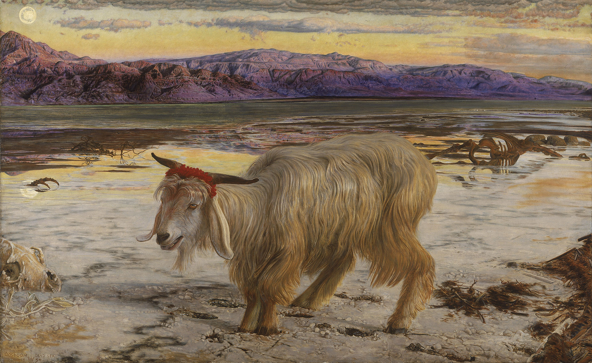

Hay en el Génesis un pasaje que parece sacado de otro libro. Ocupa cuatro versículos, aparece justo antes del diluvio y no se parece a nada de lo que lo rodea. Dice que cuando los hombres empezaron a multiplicarse sobre la tierra y les nacieron hijas, los bənê hā-ʾĕlōhîm —los «hijos de Elohim»— vieron que eran hermosas y tomaron por mujeres a las que quisieron. Dice que en aquellos días había nefilim en la tierra, «y también después». Y dice que aquéllos fueron los héroes de antaño, los hombres de renombre.
Y entonces se corta. El narrador no explica quiénes eran esos hijos de Elohim, no dice de dónde bajaron, no cuenta qué fue de ellos. Cuatro versículos, y en la línea siguiente ya está hablando de otra cosa.
Sobre este fragmento se ha construido uno de los relatos más influyentes de la cultura occidental: el del ángel que se rebeló, cayó y se convirtió en el enemigo. La lectura tiene mil quinientos años de historia y una arquitectura impresionante. Lo único que no tiene es apoyo en el texto.
El verbo que no aparece
Merece la pena leer el pasaje al revés: buscando lo que no tiene. No tiene un solo verbo de caída aplicado a los hijos de Elohim. No hay rebelión. No hay orgullo. No hay expulsión. No hay un trono desafiado ni un ejército celeste derrotado. Y, sobre todo, no hay castigo para ellos: el texto los presenta actuando y no vuelve a ocuparse de su suerte.
El versículo 3, que suele leerse como la sentencia, no lo es. Lo que hace es limitar los días del hombre a ciento veinte años: es un límite impuesto a los humanos, no una condena a los seres celestes. Y cuando llega la sentencia de verdad, en 6:5-7, recae sobre la maldad humana. El diluvio no se decide por lo que hicieron unos ángeles. Se decide por lo que hicieron los hombres.
Que los bənê hā-ʾĕlōhîm sean seres celestes de la corte divina es, en la exégesis histórico-crítica, terreno firme: la misma expresión designa a los miembros de la asamblea divina en Job 1:6, 2:1 y 38:7, y en los salmos 29:1 y 89:7. Existen lecturas alternativas —que fueran descendientes de Set, o reyes y nobles— y tienen una larga tradición interpretativa detrás, pero son minoritarias en la investigación académica y responden a preocupaciones distintas de la histórica. Conviene saber que existen y saber también qué peso tienen.
Es tentador apoyar todo el argumento en la palabra nefilim, derivándola de la raíz hebrea nafal, «caer», para concluir que ya el Génesis habla de «los caídos». No conviene. Ésa es la derivación tradicional, pero se propone también un préstamo del arameo nəfîlā, «gigante», que es justamente como lo entendió la Septuaginta al traducir gígantes. La etimología está en disputa, y un argumento sólido no se construye sobre una palabra discutida cuando se puede construir sobre lo que el texto dice y no dice.
El libro donde el mito sí está
El ángel caído no nace en el Génesis. Nace en un libro que no entró en la Biblia: el Libro de los Vigilantes, los capítulos 1 al 36 de lo que hoy llamamos 1 Enoc.
Ahí sí está todo. Doscientos seres celestes que descienden, juran juntos en el monte Hermón para que ninguno pueda echarse atrás, toman mujeres humanas y engendran a los Gigantes, que llenan la tierra de violencia. El libro no cuenta una historia sino dos, fundidas: los especialistas distinguen desde los años setenta un ciclo de Shemihazah, donde el jefe angélico instiga la transgresión y el pecado es cruzar la frontera entre el cielo y la tierra, y un ciclo de Asael, donde un ángel revela lo que no debía revelarse: la metalurgia, las armas, los cosméticos, las tinturas, la magia, la astrología. Los dos pecados son distintos y las dos historias tuvieron probablemente origen separado.
Y hay un detalle en este libro que explica más de lo que parece. En 1 Enoc 15:8-16:1, cuando los Gigantes mueren, sus espíritus quedan sueltos en la tierra. De ahí salen los demonios. No de una rebelión celeste: de unos cadáveres.
La fecha es más incómoda de lo que suele decirse. La posición mayoritaria sitúa el Libro de los Vigilantes en el siglo III a.C. —Nickelsburg propone mediados de siglo para los capítulos 12 al 16—, pero conviene decir el rango entero, del siglo IV al II a.C., porque ninguna copia conservada es el original y el arameo del texto muestra varias capas cronológicas. Escribir «compuesto en el siglo III a.C.» sin más es dar por resuelto lo que no lo está.
Los fragmentos de la cueva cuatro
En 1952, en la cuarta cueva de Qumrán, aparecieron entre miles de fragmentos los restos de varios manuscritos de Enoc en arameo. Los cataloga la edición de J. T. Milik de 1976: 4Q201 y 4Q202 cubren el Libro de los Vigilantes, otros siete manuscritos el resto del corpus, y tres más el Libro de los Gigantes, ese apéndice enóquico que después tuvo su propia y extraña historia.
Lo que estos fragmentos probaron es concreto y vale mucho: que la lengua original era el arameo, anterior al griego y al etíope en los que el libro había sobrevivido, y que el texto ya existía materialmente en esa época. Lo que no permiten es citarlos a la ligera. La edición de Milik reconstruyó buena parte del arameo a partir de las versiones griega y etíope, y esa reconstrucción produce —en palabras de la crítica posterior— la ilusión de que se conserva mucho más de lo que realmente se conserva. Antes de escribir «el texto arameo dice», hay que comprobar si eso está en el fragmento o si es una restitución del editor.
Hay además una ausencia elocuente. En Qumrán no hay un solo fragmento del Libro de las Parábolas, los capítulos 37 al 71, que es justamente donde aparece el «Hijo del Hombre» enóquico. Sobre esa ausencia se ha discutido mucho, y con razón.

¿Quién copia a quién?
Queda la pregunta obvia: si el mito está desarrollado en Enoc y apenas insinuado en el Génesis, ¿cuál viene de cuál? Durante cincuenta años la respuesta mayoritaria fue que Enoc amplía y comenta el Génesis. Hoy la cuestión está bastante más abierta.
El Libro de los Vigilantes es exégesis expansiva del Génesis: un midrash que desarrolla lo que el pasaje bíblico apenas insinúa. Fue la respuesta estándar durante medio siglo y sigue siendo defendible.
La pregunta está mal planteada. Suponer que Enoc «depende de la Biblia» proyecta al siglo III a.C. una noción de Biblia y de canon que entonces no existía.
Génesis y Enoc son dos desarrollos independientes de una tradición común anterior a ambos. Ninguno copia al otro: los dos beben del mismo fondo.
La datación al siglo III a.C. descansa en base más frágil de lo que se admite: dataciones paleográficas divergentes para el manuscrito más antiguo, ninguna copia autógrafa y un arameo con varias capas cronológicas.
La observación de Annette Yoshiko Reed es la que más obliga a pensar: preguntar si Enoc «depende de la Biblia» supone que en el siglo III a.C. existía ya algo llamado Biblia, con sus límites fijados, y no existía. Lo que había era un conjunto de tradiciones en circulación, algunas escritas, que competían y se combinaban. La imagen correcta no es un libro copiando a otro: es un fondo común del que dos textos sacan cosas distintas.
El chivo que se va
Hay una segunda pieza en esta entrega, y viene del sitio menos esperado: el ritual del Día de la Expiación. En Levítico 16 se echan dos suertes sobre dos machos cabríos. Una dice la-YHWH, «para YHWH». La otra dice la-ʿăzāʾzēl.
El paralelismo de la construcción es el argumento más fuerte que existe en el asunto: si la primera suerte nombra a un destinatario, la segunda también debería nombrarlo. Pero no hay acuerdo sobre quién o qué es ʿazazel, y siguen en liza cuatro lecturas. Que sea el nombre de un ser demoníaco del desierto es hoy la opción mayoritaria en la crítica, con Milgrom, Levine y Janowski detrás. Que sea un topónimo, un despeñadero, es la lectura rabínica del Talmud. Que sea el chivo mismo —«el macho cabrío que se va»— es filológicamente la más débil de las cuatro y, sin embargo, es la que ganó: es la que está detrás del caper emissarius de la Vulgata, del scapegoat inglés y de nuestro «chivo expiatorio».
Y hay una cuarta lectura que es en realidad una decisión: la Septuaginta traduce con apopompaîos, «el que aparta», y con ella evita deliberadamente crear un nombre propio. Los traductores griegos vieron el problema y lo esquivaron. Diecisiete siglos después seguimos discutiendo lo que ellos prefirieron no decidir.

El puente con Enoc es directo. El Asael del arameo se convierte en Azazel en las versiones griega y etíope. Y en 1 Enoc 10:4-6, Rafael lo ata y lo arroja al desierto; dos versículos después se ordena que todo el pecado le sea escrito. Eso es, funcionalmente, el rito de Levítico 16 convertido en mito. Lo que se discute —y se discute de verdad— es la dirección: si Enoc está dando trasfondo mítico a un rito que ya existía, o si los dos textos beben de una demonología del desierto más antigua que ambos.
El pecado que no era el orgullo
Aquí conviene detenerse, porque es el punto donde casi todo el mundo tropieza, incluidas divulgaciones muy solventes.
El pecado de los Vigilantes no es el orgullo. No es querer ser como Dios, no es desafiar el trono, no es negarse a servir. Es lujuria, es mezcla ilícita y es revelar secretos. El ángel soberbio que quiso ocupar el lugar de Dios y fue precipitado desde el cielo pertenece a otra historia, se construye siglos más tarde y se hace con materiales de otros textos: un oráculo de Isaías contra el rey de Babilonia, otro de Ezequiel contra el rey de Tiro y una leyenda sobre Adán que la patrística fue soldando hasta convertirla en un único relato.
Son dos mitos de ángeles caídos, no uno. Uno cae por deseo y por hablar demasiado; el otro, por soberbia. El que hoy reconoce cualquiera es el segundo, y es el más tardío de los dos. Distinguirlos es, en buena medida, de lo que va esta serie.
Un libro que no entró
El Libro de los Vigilantes quedó fuera. Fuera del canon judío y fuera del cristiano, con una excepción notable: la Iglesia ortodoxa etíope tewahedo, que lo conserva en su Biblia hasta hoy y a la que debemos que el texto completo haya sobrevivido.
Y con todo, hay un texto del Nuevo Testamento que lo cita como profecía. La Carta de Judas, en sus versículos 14 y 15, atribuye a «Enoc, séptimo desde Adán» un anuncio del juicio, y lo que cita está en 1 Enoc. Un libro excluido del canon, citado por un libro incluido en él. La historia de qué entró y qué no entró, y por qué, la cuenta con detalle Los libros expulsados: Enoc y los demás, en la serie de los libros perdidos; y la de cómo se encontró la biblioteca del desierto está en La biblioteca del desierto.
Queda entonces un mapa raro. Un fragmento de cuatro versículos en el Génesis que no cuenta el mito. Un libro que lo cuenta entero y que no entró en la Biblia. Un ritual del Levítico con un destinatario que nadie ha logrado identificar. Y, mil quinientos años después, una figura con cuernos que ninguno de los tres describe.
El siguiente paso de esta historia se juega en el desierto de Judea, con dos espíritus y una pregunta persa que hay que tratar con mucho cuidado. Pero antes, conviene ver el mapa entero.
Pieza interactiva · estrena la tercera etapaEl linaje de una idea
Veintisiete textos y culturas, y el trazo de cada línea diciendo de qué tipo es el vínculo: continuo si hay consenso, discontinuo si hay debate, punteado si es un paralelo sin contacto demostrado. Y tachado si es algo que se repite mucho y que las fuentes no sostienen. Esas seis líneas tachadas son el índice de la serie.
Abrir el grafo →Y si esta entrega ha abierto la pregunta de cómo el acusador de Job acabó convertido en el enemigo del mundo, ese arco está contado en El nacimiento de Satán. Esta serie empieza justo donde ese artículo termina.
Es dato firme que Génesis 6:1-4 no aplica ningún verbo de caída a los hijos de Elohim, que la sentencia de 6:5-7 recae sobre la maldad humana, y que el mito desarrollado de la transgresión angélica —con su castigo, su demonología y su explicación del origen del mal— es enóquico y no genesíaco. También lo es que los fragmentos arameos de la cueva 4 de Qumrán (4Q201, 4Q202, editados por Milik en 1976) prueban que la lengua original era el arameo, y que en Qumrán no hay ningún fragmento del Libro de las Parábolas. La separación de los ciclos de Shemihazah y Asael en 1 Enoc 6-11 se remonta a los trabajos de Nickelsburg y Hanson, ambos en el Journal of Biblical Literature de 1977.
Debate abierto: la relación entre Génesis 6 y el Libro de los Vigilantes —dependencia, resumen o desarrollos paralelos— sigue sin resolverse, y ninguna de las tres posiciones puede darse por cerrada. La fecha del libro tampoco: el rango que la crítica admite hoy va del siglo IV al II a.C., y Sanders ha mostrado que la datación al III es más frágil de lo que se suele decir. La identidad de ʿazazel en Levítico 16 tiene cuatro lecturas en liza, y la dirección de la relación con el Asael de Enoc es incierta. La etimología de nefilim está en disputa y en este artículo no se usa como argumento. Sobre la variante del Códice Alejandrino en Génesis 6:2, que leería ángeles de Dios donde el resto de los testigos lee hijos, aquí no se afirma nada: es un dato habitual en los comentarios que no hemos comprobado en aparato crítico.
Nada de lo anterior dice si el relato es verdadero o falso, ni pretende decirlo. Describe cuándo aparecen los textos, qué dicen y cómo se han leído. Que el mito del ángel caído se formara después del Génesis no lo hace menos importante: lo hace histórico, con una fecha, unos autores y unas razones. Iluminar el origen de un relato no es desmentirlo.